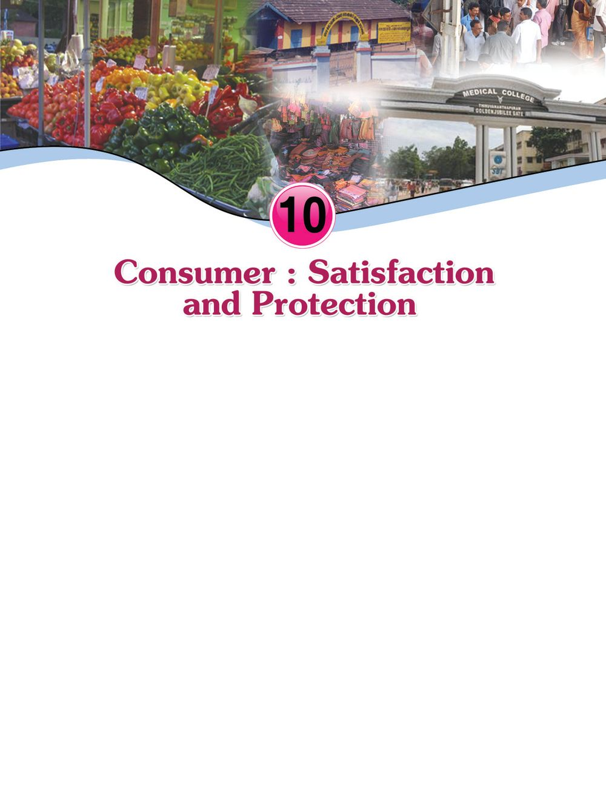
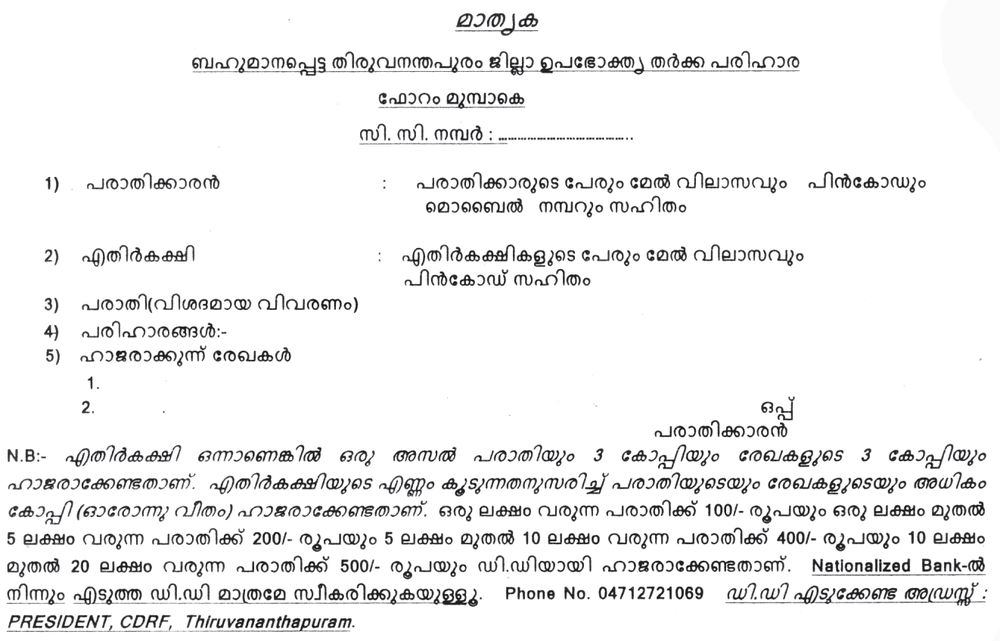
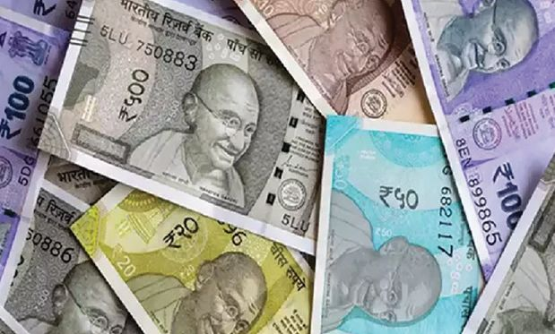
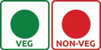
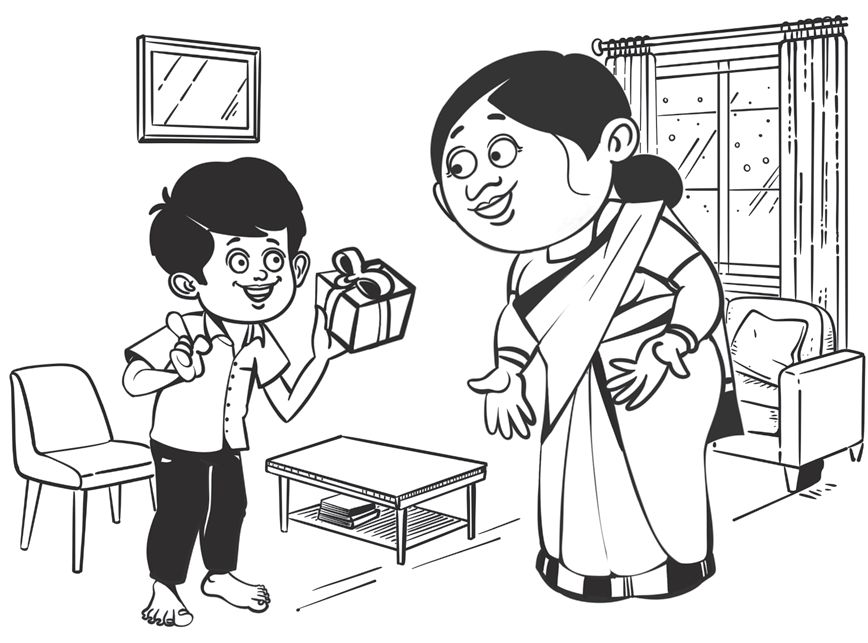

Observe the pictures. We visit these institutions for various requirements. Discuss the requirements satisfying for which we visit them and list them out. • Purchasing vegetables for cooking food. • To avail treatment for diseases. • •
Page 93

Page 94

Social Science II
Can you prepare a list of our wants? It is clear that modern man has various wants such as food, cloth, shelter, education, health, entertainment, etc. For this, we use goods and services. Find out the goods and services used by you. Do we pay for all the goods? Do all services have to be rewarded? We are now in a situation where even water and air have to be paid for. Think about the reasons for that. •
Scarcity of resources
•
Increase in wants
• •
Consumption, consumer Consumption is the satisfaction of human wants using goods and services. A consumer is a person who purchases and uses goods and services by paying or agreeing to pay a price. In order to satisfy our wants, we depend primarily on sale outlets and service centres. Production, distribution, and consumption are inter related economic activities. In reality, all economic activities are meant to satisfy the consumers.
Satisfaction of the consumer "A customer is the most important visitor on our premises. He is not dependent on us. We are dependent on him. He is not an interruption in our work. He is the purpose of it. He is not an outsider of our business. He is a part of it. We are not doing him a favour by serving him. He is doing us a favour by giving us an opportunity to do so."
Gandhiji
182
Consumer: Satisfaction and Protection
Page 95

Standard X
Have you noticed Gandhiji's words? Discuss whether such a situation prevails today in sale outlets and service centres. While purchasing products, we ought to pay different prices for the same product in different shops. We wish to get goods at a fair price. What are the other aspects that a consumer expects while purchasing products and using services? • Quality • Reliability • After sale services • • Look at the experience given below. In the month of June, Anu and Vinu reached school with new umbrellas. Even though both of them used their umbrellas carefully, after two weeks Anu's umbrella was so damaged that it could not be opened. Vinu could use his umbrella well till the year end. In the above experience, which consumer was fully satisfied? Why? Doesn't such experience happen in your life? Share it in the class. The act of fulfilling the wants of the consumer through the consumption of goods and services is called satisfaction. We read news related to food poisoning after having food from hotels. There are various circumstances where the consumers are exploited or cheated. • Selling low quality products • Adulteration • Charging excess price
Consumer: Satisfaction and Protection
183
Page 96

Social Science II
• Manipulation in weights and measures • Delay in making services available • • Draw cartoons and collect reports and pictures on the subject 'consumer exploitation' and conduct an exhibition in the class.
What are the problems faced by consumers in the market? Situations that lead to the exploitation of the consumers increase with the increase in the extent and intensity of consumption. Consumers must be able to consume with ease and without being exploited. For this, laws, administrative measures, and consumer education, etc. are necessary. Let us see some laws existing in India.
Consumer Protection Act 1986 The Consumer Protection Act 1986 clearly defines the consumer's rights and sets up special judiciary mechanisms for consumer protection in India. Let us see some of the rights of the consumer as per the Act. • The right to be protected against the marketing of goods and services which are hazardous to life and property. • The right to be informed about the quality related aspects of goods and services. • The right to have access to goods and services at fair prices. • The right to be heard and to seek redressal at appropriate forums. • The right to consumer education. The consumer courts were established as a result of this Act.
184
Consumer: Satisfaction and Protection
Page 97

Standard X
Consumer courts There may be situations in which the consumers are not satisfied with the dealings of the producers and distributors. Under such circumstances, they can approach the consumer courts which are mechanisms for assisting or helping them as per the law. Consumer courts play an important role in ensuring justice to the consumers. They settle consumer disputes by various means including ensuring compensation for the consumers. The consumer courts are able to create confidence in the consumers and bring about a qualitative change in their lives. Today, in India, consumers are utilising the services of consumer courts operating fruitfully at three levels- district, state and national. Let us see the structure and jurisdiction of the district, state and national consumer courts.
Consumer courts
Structure
Jurisdiction
District consumer disputes redressal forum -
functions at district level After collecting evidence president and two members based on the complaint filed at least one woman member by the consumer, verdicts are given where the compensation claimed does not exceed Rs 20 lakhs.
State consumer disputes redressal commission -
functions at state level president and two members at least one woman member state government has the right to appoint more members.
National consumer disputes redressal commission -
functions at national level Verdicts are given on disputes president and not less than where compensation claimed four members exceeds rupees one crore Central government has the right to appoint more members.
-
Consumer: Satisfaction and Protection
Verdicts are given on consumer disputes where compensation claimed is above Rs. 20 lakhs but upto rupees one crore.
185
Page 98


Social Science II
The procedures of the consumer courts are different from those of the general courts. The important features of consumer courts are as follows: • Simple procedures • Fast assurance of justice • Less court expenses It is sufficient to submit before the court a written petition about the loss and damages faced by the consumer. A nominal fee is charged on the basis of the value of the compensation claimed by the petitioner.
Observe the sample form reproduced above and find out the details to be furnished while filing a complaint. Situations when complaints about consumer disputes can be filed: • When the purchased product is damaged or defective.
186
Consumer: Satisfaction and Protection
Page 99


Standard X
• Defective services received from government/ non government/ private institutions. • Appropriation of price over and above the amount legally fixed or marked on the outer casing. • Violation of the prevention of adulteration law • Sale of products which are harmful to life and safety • Loss due to trading methods which lead to unfair practices and limited consumer freedom. • Giving misleading advertisement for increasing sales Is advertisement a boon or bane? Organise a debate on this topic. A student joined a university study centre and remitted the fees. But when the study materials were not made available in time, the student contacted the study centre and was informed that the university has discontinued the course. The study centre was not willing to refund the fees paid. The student filed a complaint against this in the consumer court. The court verdict was to refund the entire fees paid and the student got the fees refunded. You have read about the experience of a complaint being settled in a consumer court. Collect from the media different news related to the verdict of consumer courts.
Evaluate the extent to which the consumer courts are helpful in protecting the rights of consumers. The following are the compensations for consumer disputes obtained through consumer courts. • Replacing the product • Repayment of cash paid or excess amount appropriated • Monetary compensation for the loss
Consumer: Satisfaction and Protection
187
Page 100

Social Science II
• Direction to rectify the defects in services. • Stopping harmful trade practices • Prohibition of the sale of harmful food items • Reimbursement of the expenses incurred in lodging the complaint According to the Consumer Protection Act 1986, apart from the consumer courts, three - level advisory councils have been set up. They are the district consumer protection council, state consumer protection council, and national consumer protection council. The responsibility of these councils is to advise the respective governments on consumer rights. Prepare a report on the procedures of consumer courts by interviewing a legal expert. Apart from the Consumer Protection Act 1986, there are many other Acts for the protection of the consumers. Important among them are mentioned below. Sale of Goods Act, 1930 It ensures that the prescribed conditions of sale are met while purchasing products. Violation of guarantee, warranty, after sale services, etc. comes under this Act. Agriculture Produce (Grading and Marking) Act, 1937 This Act is meant for determining the standard of agricultural products. Essential Commodities Act, 1955 This Act protects the consumers from supernormal profit, hoarding, black marketing, etc. Weights and Measures Act, 1976 This Act is helpful in preventing cheating in weights and measures.
188
Consumer: Satisfaction and Protection
Page 101

Standard X
Administrative mechanism g by checkin t c i r t s e nt h Due to t afety Departme S nthe Food ck posts, the i e h ous veg at the c n o s i o p of to stances rought b g n i e b d on a etables ecrease d s a h Kerala . le large sca st 27 gu u 2015 A
The sea rc M e t r o l h by the Lega l ogy De partme during t nt he the distr Onam season in ict being fil resulted in cases ed again st sons fo r manip 271 peru lation o weights f an 2015 Au d measures. gust 27
Note these newspaper clippings. Which are the departments that have taken actions? There are different departments and institutions working for the protection of consumers' interests. Let's take a look at some of them. • Legal Metrology
ensures the weights and
Department
measures standards
• Food Safety Department
ensures the quality of food products
• Central Drugs Price
controls price of medicines
Control Committee • Drugs Control Department ensures the quality and safety of medicines. • Food Safety and Standard ensures the quality of food Authority of India
products at various stages like production, distribution, storage, sale and import.
Find out more institutions and departments like the above and collect news related to them.
Consumer: Satisfaction and Protection
189
Page 102



Social Science II
There are some symbols that are given on the basis of assessing the standard of products and institutions. The symbols help the consumers in ascertaining the quality of products and institutions. Let us see some of them. • ISI stamp is given by the Bureau of Indian Standard (BIS) to ensure a fixed quality of products . This symbol can be seen in products such as electrical appliances, cement, paper, paint and gas cylinder. • International Organisation for Standardisation (ISO) certifies the quality of goods and services of more than 120 countries including India. • International Organisation for Standardisation (ISO) gives certification to different products and service institutions like hospitals, banks, etc.
• It indicates the purity of gold jewellery
• This symbol is used internationally to certify the safety of electronic and electrial appliances
• Agmark symbol is used to ensure the quality of agricultural and forest products.
• These symbols are marked to distinguish between vegetarian and non vegetarian food items. • It certifies the safety and quality of products processed from fruits and vegetables. FPO is the short form of Food Products Order.
190
Consumer: Satisfaction and Protection
Page 103


Standard X
Make a list of the products which have these symbols.
Intervention of the society Official mechanisms and laws alone cannot ensure the satisfaction of the consumers. Intervention of an alert society is necessary for this. What are the ways in which the intervention of the society can be made possible? • • • • •
Functioning of consumer organisations Consumer awareness Public interest litigation
Consumer education Everyone is a consumer. Variety in products, personal interest, increasing demands, influence of market force, etc. has complicated and widened the scope of consumption. Consumer education is necessary for the acquisition of right habits by the consumers. What are the ways by which consumer education can be ensured? • • •
Awareness programmes Inclusion in the curriculum Observance of the National Consumer Day
• • What are the ways in which consumers are empowered through consumer education? • Helps to consume sensibly as per the wants. • Helps to acquire information regarding products and services
National Consumer Day In India, December 24 is observed as the National Consumer Day. In 1985, the United Nations Organisation passed a resolution on the guidelines regarding consumer protection. On that basis, Government of India passed an Act on consumer protection. This Act came into force on 24 December 1986.
• Enables the consumer to make the right choices. Consumer: Satisfaction and Protection
191
Page 104


Social Science II
• Makes the consumer aware of his/her rights • Makes them capable of intervening in consumer disputes Let us see what habits will be formed as a result of consumer education programmes. •
ask for the bill for every purchase made
•
make sure that the weights and measures are accurate
•
make sure, while purchasing packed items, that the name of the product, date of packing, expiry date, weight, price, and producer's/distributor's address are stated
•
note the symbols representing the standard of the products
•
understand how to use and operate the products purchased
Prepare a consumer awareness wall magazine listing right consumer habits.
Prepare a note on the importance of consumer education A happy consumer society can be created only with the combined effort of the government, non-governmental institutions, and society.
Let us assess
192
•
The satisfaction of the consumers is the main aim of all economic activities. Do you agree with this statement? Why?
•
What are the situations in which the consumers are exploited?
•
What are the rights included in the Consumer Protection Act?
•
The Consumer courts guard consumer rights. Substantiate. Consumer: Satisfaction and Protection
Page 105

Standard X
•
How do advertisements adversely affect the consumer? Explain with examples.
•
Compare the functioning of the legal metrology department and the district consumer redressal forum.
•
What all can be included in the seminar paper to be presented in a seminar in the school on World Consumer Day?
•
Describe the ways in which you can intervene in the consumer disputes in your area?
Extended Activities •
Prepare a magazine including different types of creative work and articles related to consumer protection.
•
Make a power point presentation with slides on consumer awareness.
•
Organise a class level exhibition by collecting news pertaining to the functioning of consumer courts and related institutions.
Consumer: Satisfaction and Protection
193
Page 106

Social Science II
Notes
194
Consumer: Satisfaction and Protection
Page 107

Standard X
Notes
Consumer: Satisfaction and Protection
195
Page 108

Social Science II
Notes
196
Consumer: Satisfaction and Protection
Page 109

Standard X
Notes
Consumer: Satisfaction and Protection
197
Page 110

Social Science II
Notes
198
Consumer: Satisfaction and Protection
Page 111

Standard X
Notes
Consumer: Satisfaction and Protection
199
Page 112
Security Features of a Genuine Indian Currency Note We have to know more about currency notes used for financial transactions. Genuine currency notes have certain security features. Awareness of those features can save us from being duped. Paper Banknotes are printed on special watermarked paper with substrate cotton and cotton rag. This gives the banknotes a unique “touch feel” and “crackling sound”. Watermark The portrait of Mahatma Gandhi, the multi-directional lines and an electrolyte mark showing the denomination value appear in this section and these can be viewed better when the banknote is held against light. Security Thread All banknotes carry a security thread, partially exposed and partially embedded, with readable window. The security thread of notes up to Rs 500 denomination contains “Bharath” in Hindi and “RBI” in English alternately. Rs 1000 denomination notes additionally contain “1000” as a numeral in the security thread. Micro lettering The letters “RBI” and the denomination value as a numeral can be viewed with the help of a magnifying glass in the zone between the portrait of Mahatma Gandhi and the right vertical band. (However, only letters “RBI” is seen in Rs. 10 denomination). Intaglio Printing The name Reserve Bank of India, the Guarantee Clause, the Promise Clause, the Signature of RBI Governor, the Portrait of Mahatma Gandhi, the Reserve Bank Seal, the Ashoka Pillar Emblem, the Central Denomination Value in words and figures are printed in intaglio, i.e., in raised prints which can be felt by touch. Fluorescence The number panels of banknotes are printed in fluorescent link. Optically Variable Ink The colour of the denomination in numeral appears green when the note is held flat and changes to blue when the note is held at an angle. The font size also appears reduced. This feature is available only on notes of Rs. 500 and Rs. 1000 denominations. Latent Image The vertical band contains the denomination in numeral. This can be seen by keeping the note flat on the palm of your hand at eye level and viewing it against the light. Printing and circulation of forged notes are offences under Sections 489A to 489E of the Indian Penal Code and are punishable in the courts of law by fine or imprisonment or both.